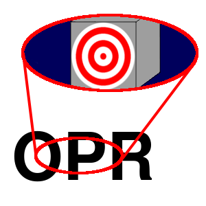

PLP
Zdjęcie wartości ze stosu do rejestru stanu.
Opis

Zdejmuje wartość ze szczytu stosu na rejestr stanu, który przechowuje flagi. Sama komórka pamięci, która stanowiła szczyt stosu nie ulega zmianie, zmienia się tylko wskaźnik stosu. W symulacji nie można jednak zmienić bitów 5 i 4 rejestru stanu. Po zmianie komórka, która stanowiła szczyt stosu została niejako "poza stosem".
Jest to jeden z dwóch rozkazów, który modyfikuje rejestr stanu niemal w całości.
Można nadal wykonać operację PLP nawet, gdy użytkownik nie wstawił na stos żadnego elementu.
Procesor 6502 tak naprawdę nie wie, kiedy można odejmować elementy do stosu sprzętowego. Musisz sam o to zadbać.
Tabela opkodów
| Opkod | Tryb adresowania | Czas wykonywania (cykle) |
|---|---|---|
| $28 |  | 4 |